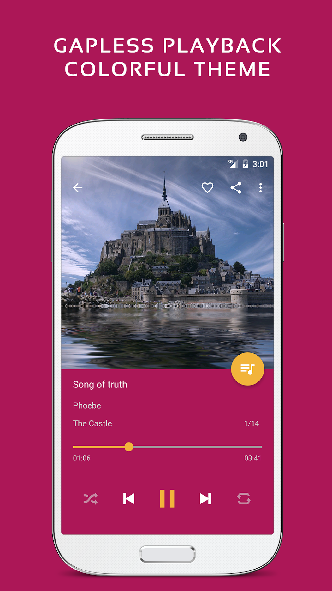

Pulsar 付费账本：轻度主力重度三档各花多少钱
从定价拆解到每类用户的单位时间成本，算清楚 Pulsar Pro 这笔钱到底该不该花，以及免费版能撑到什么程度。
它到底值不值得掏钱？这个问题我在 Play 商店评论区翻了快两页才敢下判断——有人说"这是安卓上最好的播放器，Pro 版一分不多一分不少"，有人说"免费版够我用了，花钱纯属冲动消费"。两拨人都说真话，因为他们的使用强度根本不在一个量级上。
我把账拆给你看，你对着自己的听歌习惯三秒就能对号入座。
先把定价拆清楚
Pulsar官网上的收费模式在安卓音乐播放器里算干净的那一类：一次性买断，不是订阅。付一次钱，Pro 版终身使用，跟着应用免费升级，Pulsar下载页面有详细的解锁方式说明。没有按月扣的焦虑，这一点先给它加半分——订阅制播放器哪怕每月只出几块，长期算下来都比买断贵，而且你哪天不用了忘关订阅就是一笔浪费。
免费版给什么？基础本地播放、专辑/艺术家浏览、随机循环、无缝播放（这点挺良心，同类有的把无缝锁在付费墙里）、歌单管理。能放歌、能切歌、歌不会在两首之间卡那一下——作为一个播放器该有的核心能力，免费版都齐了。
Pro 版多什么？我对照Pulsar文档里的更新日志和功能清单列一下，挑真正影响使用的几条：
| 功能 | 免费版 | Pro 版 | 为什么影响 |
|---|---|---|---|
| 交叉淡入淡出 | ❌ | ✅ | 串烧连播的氛围感来源，现场专辑关掉但歌单连播开了体验差一个量级 |
| 均衡器 + 低音增强 | ❌ | ✅ | 耳机或车载喇叭音色不够时的救命稻草 |
| ReplayGain 音量均衡 | ❌ | ✅ | 随机播放时不会突然蹦出一首特别响或特别轻的歌 |
| 文件夹视图 | ❌ | ✅ | 标签乱的老曲库、按目录整理的用户刚需 |
| 智能播放列表 | ❌ | ✅ | 最常播放、最近添加、随机发现——不用自己手动建歌单 |
| Last.fm scrobbling | ❌ | ✅ | 听歌记录自动同步到 Last.fm 年度榜单 |
| Android Auto / Chromecast | ❌ | ✅ | 车机和投屏链路的通行证 |
| 标签编辑器 | ❌ | ✅ | 直接在应用里修歌名、专辑、封面 |
| 桌面小部件 | ❌ | ✅ | 熄屏也能切歌 |
说实话这个定价挺鸡贼的——它不是把一两个功能锁在付费墙里，而是把一整条进阶链路全锁了：从声音调校到统计积累到多屏体验，从本地组织到车载投屏到标签治理，每一环都有 Pro 的影子。免费版让你能听歌，但任何想把体验做得更顺的动作都要掏钱。

分三类人算这笔账
轻度用户：每天听一两小时，曲库 500 首以内
如果你主要用网易云或 QQ 音乐，Pulsar 只是偶尔放一放自己存的 FLAC 或演唱会录音，那免费版完全够用。无缝播放是免费的，基础浏览和切歌没问题，你不需要均衡器，不需要文件夹视图，也不会开车的时候用它。
Pro 版对你的价值：接近于零。省的时间？没有。提升的体验？你根本感觉不到差。结论：别付，省下的钱喝杯奶茶不香吗？
主力用户：本地曲库 1000-3000 首，手机上是主力播放器
这档是 Pulsar Pro 的核心受众，我自己就在这个区间。三千首歌大概是四五年积累下来的，标签有一半乱的（早年从不同渠道扒的，文件名就是真实身份），开车通勤用 Android Auto，歌单连播喜欢开两秒交叉淡入，还想每年年底拉一份 Last.fm 年度榜单看看自己今年主要听了什么。
算一下时间账：修标签省的时间——三千首歌里五百首标签有问题，用 Pulsar 的标签编辑器比把它们拖到电脑上跑 MusicBrainz Picard 快了至少三小时；开车用 Pro 版的 Android Auto 省了每次连上蓝牙还要翻应用找播放器的麻烦，一年下来大概省出一个下午；ReplayGain 让随机播放不用频繁调音量——小事但天天遇到就是体验差。
按年算下来，Pro 版一次性买断的成本大概相当于两顿饭钱，而它省的时间和提升的体验至少值这个数。结论：闭眼付，别犹豫。
重度用户：曲库 5000 首以上，车机 + 投屏 + 多设备
五千首歌是什么概念？大概是十几年的积累，现场专辑、古典乐章、电子混音、有声书全在里面。这种级别的用户大概率已经有了 Last.fm 账号在记着所有设备的听歌记录，大概率有 Chromecast 或 Apple TV 想把歌投到大屏上，大概率耳机至少有两副要切不同的均衡器预设。
Pro 版在这个区间不是"加功能"而是"基础设施"——没有 Android Auto 你开车就是在用手机外放或车载电台，没有 Chromecast 你投大屏要绕一圈，没有 Last.fm scrobbling 你年度榜单就要手动整理，没有文件夹视图你在五千首歌里找一个目录要翻十分钟。
这笔账甚至不用算时间——没有 Pro 版你根本没法用。结论：早买早用。
不付这笔钱还有什么路
说两句替代方案，都是我自己试过的，给你一个不掏钱的备选清单：
Poweramp：安卓本地播放器的旗舰，功能比 Pulsar 还全，但买断价格更高，而且近几年更新节奏变慢，部分新 Android 版本适配出过小问题。如果你愿意多花一倍的钱换更老牌的产品，可以考虑。
Musicolet：完全免费、无广告、无内购，功能包括文件夹视图、标签编辑、桌面小部件，甚至有 ReplayGain。但 UI 偏古早、声音调校选项少、Android Auto 支持较弱。适合预算为零的主力用户，忍受一下界面就能用。
AIMP：免费版有均衡器和 ReplayGain，支持 Last.fm scrobbling，文件夹浏览也有。缺点是 UI 设计风格像 Windows 桌面软件移植过来的，在手机上操作略别扭。但如果你只关心功能能不能用，它是免费替代里的强选项。
降低使用频率：最省钱也最反人类的方案——少听本地歌，把常用的三百首同步到流媒体平台。但本地 FLAC 的音质和收藏的独占内容是流媒体给不了的，而且跨平台之后你的曲库组织逻辑全变了。不推荐，除非你真的很少开 Pulsar。
结论
| 使用强度 | 建议 |
|---|---|
| 轻度（偶尔用） | 别付，免费版足够 |
| 主力（每天用、有本地曲库） | 闭眼付，一次性买断比订阅制香太多 |
| 重度（曲库大、多屏多设备） | 没有 Pro 版等于没用 |
还有一个折中选项：先免费版用半年再说。Pulsar 免费版功能限制够克制，不会让你用着用着就被弹窗或广告烦得必须付费——这也是它口碑还不错的原因。用半年之后你自然知道哪些功能是真的离不开的，再决定要不要升级也不迟。对主力用户来说这只是推迟了几个月的购买时间，但能省下"万一我买了发现自己根本用不上呢"的那一点点不确定性。值得一提的是，Pulsar 的功能参考资料在GitHub、Gitee、GitCode三个仓库都有镜像，方便不同网络环境的用户查阅。